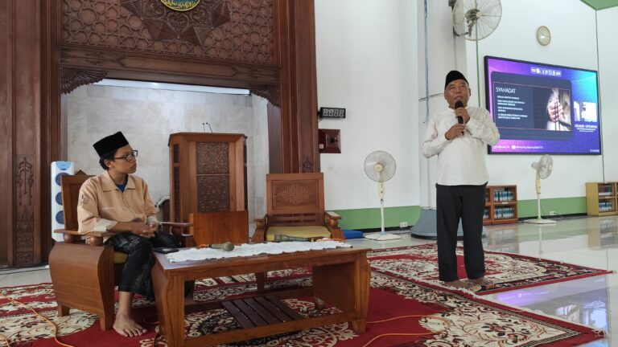

Suasana Kuliah Umum Mentoring Agama Islam Semester Genap 2024/2025
Kampus ITS, ITS News — Institut Teknologi Sepuluh Nopember (ITS) kembali menggelar Mentoring Agama Islam Semester Genap 2024/2025 dengan berbagai rangkaian kegiatan. Kegiatan ini bertujuan membentuk karakter mahasiswa baru (maba) muslim berbasis nilai-nilai Islam. Acara yang resmi dibuka dalam kuliah umum ini berlangsung di Masjid Manarul Ilmi ITS, Sabtu (22/02).
Dalam pembukaan acara, Ketua Tim Pembina Kerohanian Islam (TPKI) ITS Prof Dr Muhammad Mashuri MT menyampaikan bahwa mentoring merupakan sarana pencarian ilmu bagi mahasiswa. “Kegiatan mentoring ini untuk mempersiapkan generasi emas di 2045 yang perlu dibekali dengan segudang ilmu, termasuk keilmuan Islam,” ujarnya.
Lebih lanjut, dosen yang akrab disapa Mashuri ini menjelaskan, kegiatan mentoring ini terdiri dari beberapa rangkaian acara. Adapun diawali dengan dengan kuliah umum yang menghadirkan empat materi utama dari dosen-dosen agama Islam ITS sebagai pondasi awal. Setelah mendapatkan pemahaman dasar, mahasiswa mengikuti kelas pendalaman dalam enam sesi yang mencakup diskusi dan ujian untuk menguji pemahaman mereka.

Tak berhenti di situ, kegiatan ini kemudian diperkuat melalui kegiatan Ramadhan di Kampus (RDK) 46. Pada kegiatan ini, maba mengikuti kajian inspiratif, kajian rutin Subuh, dan Tarawih selama bulan Ramadhan guna memperdalam pemahaman keislaman secara aplikatif. “Melalui mentoring ini, mahasiswa mampu mengamalkannya ilmu keislaman dalam kehidupan sehari-hari,” tambah Dosen Statistika ITS tersebut.